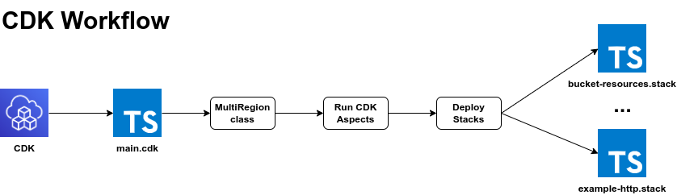
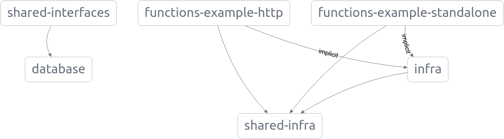
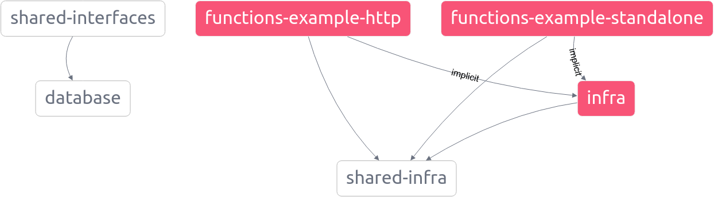
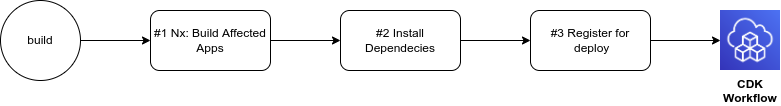
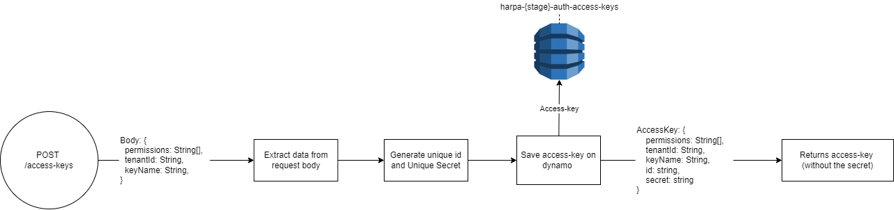
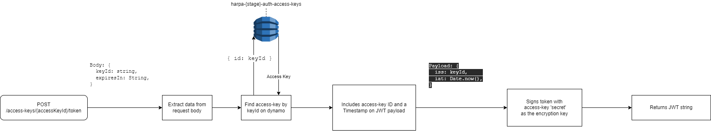
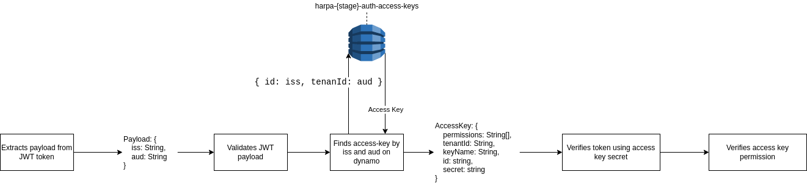

nx-nest-template
newpet 💙
Why was newpet named this way? What's the meaning behind it?
newpet is the portuguese word for harp. The harp is a plucked-string instrument and regular member of the orchestra, its sound is harmonic and helps shape and define individual notes and beats, adding rhythmic impulse, fullness, and dramatic eloquence. As well as the instrument, this project aims to interact with different pieces harmoniously and shape the transactions the way it bests serve our clientes.
▶️ Topics
Infra
Deploy tool
We use the AWS Cloud Development Kit (AWS CDK) as our main deploy tool. A quick overview of how this tool works can be seen in the image below. If you have worked with CloudFormation or any other IaC tool it might be easy to get started since it share the same concept as the CloudFormation, except it is easier. Here we work with TypeScript to define our stacks.

For more information on how the CDK works, please refer to the AWS Developer Guide.
Deploy entry point
The minimum entry point for this project to be deploy is the file located at infra/main.cdk.ts. The
main.cdk file instantiates the MultiRegion class for each available region in the CDK
Context. The idea is that the MultiRegion class should bootstrap all resources that should be
deployed in multiple regions. For example if the bootstrap method of the MultiRegion class looks
like this:
private bootstrap() {
/** env prop that is passed to all Stacks. */
const env = { account: this.config.account, region: this.region };
new BucketResourcesStack(this.app, this.prefix`BucketResourcesStack`, { env });
}
and we have two regions in the CDK Context, let's say us-east-1 and us-east-2, it would generate two different stacks:
$ cdk list
projectName-dev-usEast1-BucketResourcesStack
projectName-dev-usEast2-BucketResourcesStack
From the CDK Docs we have:
When you run the cdk synth command for an app with multiple stacks, the cloud assembly includes a separate template for each stack instance. Even if the two stacks are instances of the same class, the AWS CDK emits them as two individual templates.
This means that the two are completely different Cloudformation Templates. If you want to create a bunch of
resources that are not multi-region but rather single-region, you can follow the same concept and create a class
called MainRegion or NorthVirginiaRegion. Just be aware that if you end up creating one
class for each region that might not be the best approach for you. Moreover, BE AWARE that refactoring the
classes that create your resources will result in re-creating them. So please try to think in the possible future
cases to avoid refactoring the infrastructure (I know this is hard 😬).
Below is a basic diagram that briefly shows how the deploy process works: 
How the Project Graph is Built
Nx creates a graph dependecy between all projects in the repository, so each application/lib is a node in this
graph. You might have noticed that the infra folder has a project.json in it, which
turns it into a project. This was necessary because we need the Infra to interact with the applications so we can
infer the affected application. See below the graph generated for this template repository:

This graph can be generated with:
nx graph
Also note that the infra project is implictly referenced by all Application nodes in the graph. This
implict dependecy allow us to redeploy all the applications when anything in the infra changes (the
same behaviour as the package.json), this way we will never have a resource changed and not reflected in the
applications that might use it.
If you have notice, none of the project.json files of the application projects have a implict
dependecy explicitly set. This is achieved with the infra-project-graph-plugin plugin, located at
tools/plugins/infra-project-graph-plugin. This plugin checks for every project that has an
application type add adds this implicit dependecy to the infra project. It also remove the dependecy
that the infra project has in every other application. Such dependecy is useless for us and would
only make the graph more tangled than it needs.
How affected apps are built and deployed
We use Nx to discover which projects were affected and should be re-deployed. For example, if we change something
in the infra project, all projects would be affects since they all depend on the
infra (see How the Project Graph is Built for
reference). Let's see how Nx sees affected projects in the graph. For this we should run the below command:
nx affected:graph --base=HEAD~1 --head=HEAD
This would give us the following graph:

There are some steps from build to deploy. Refer to the workflow below and the following decription of each step:

Steps Description:
-
We want only the affected apps to build. This ensures that our deploy process will be as quick as possible.
This step is pretty straightforward since Nx does everything for us. Since it has the projects graph (see
How the Project Graph is Built for reference), it knows which one
are affected and target the build script only for those. The command that achieves this is
nx affected --target=build --configuration=productionwhich is also aliased asnpm run build:affected. -
Since we need to deploy each lambda as a single unit, it need the packages that are in the root node_modules
folder. We also want only the packages used by the project, this way our lambda would be small.
-
🏗️
package.jsongeneration: For our lambda to keep small we would need to traverse the project and create apackage.jsonthat only has the packages that are really being used. Thankfully all the application projects are baked withgenerate-package-json-webpack-plugin, this plugin does exaclty what we have described and creates thepackage.json. -
📌 Ensuring pinned package versions: We need to make sure that we have the same packaged
versions as the ones described in the root
package-lock.json. To achieve this, we would need to runnpm cifor those built applications, but notice that thecicommand tell us that "The project must have an existing package-lock.json" (refer to the documentation). So we just copy the rootpackage-lock.jsonto the project dist folder and runnpm ci. This would ensure that we have evrything for our lambda to run.
-
🏗️
-
Now we must deploy those built projects. We already know who they are because they have a name, for example
functions-example-http. But this is the Nx name, and in CDK we have different names. For this same project, the name in the CDK stack isprojectName-dev-ExampleHTTPStack. The way it works is:-
We first need to ensure that every application project (lets say example-project) has a infra stack at
functions/example-project/infra/*.stack.ts. -
Secondly, we need to ensure that every stack id in the CDK would be the project stack class name with the
prefixfunction applied. So if the project stack class name is ExampleProjectStack, we would have the following in the main.cdk:new ExampleProjectStack(app, prefix('ExampleProjectStack'), { env });. -
Now that those rules are followed, we just get the class name, apply the
prefixfunction and append it to a file called.cdk-deploy-registered. From now on, we can run the CDK Workflow and deploy the stacks. It would get the build assets and deploy in the cloud.
-
We first need to ensure that every application project (lets say example-project) has a infra stack at
Libs
Libs/Auth
Access Keys
Access Keys are used to generate JWT tokens capable of authenticating and performing operations on the newpet backend.
With them, it is possible to define which scopes the tokens generated from it will have access and which actions can be performed in that scope. For example, we can create an access key for "Panel Operators" who have the ability to create transactions, for this we include the scope 'transactions:create' in the permissions of the key.
When creating an access-key we'll generate a random ID and a random secret to it, which both will be used to verify if the JWT generated from it is valid.

Creating a signed JWT token from an access-key
To authenticate to the newpet project, users must use a valid JWT token signed from an access key, using the
access key secret as the token's encryption key, and loading the access key in its payload body, in the
iss property. Since we've chosen not to share the ID or secret of our tokens with our clients,
we've provided a helper method in our auth library to generate signed tokens from access keys.
You can create multiples tokens with different expiration dates from an access-key

Token validation
In order to perform requests to newpet it is required to provide an Authorization property on request
Headers containing authentication token combined with prefix Bearer.
Headers: {
...
Authorization: `Bearer ${token}`
}
To validade provided token in our application HTTP endpoints, when using NestJs structure it is possible to apply a custom decorator from auth library and to informe which permissions are necessary to be allowed for accessing that resource.
import { Controller } from '@nestjs/common';
import { JwtPermissionAuth } from '@libs/auth';
@Controller()
@JwtPermissionAuth(['scope:action'])
export class ExampleController {
constructor() {}
...
}
For being able to utilize jwt based on permissions to guarantee resources security all that is necessary is
including AuthModule from auth library on app module imports.
import { Module } from '@nestjs/common';
import { AuthModule } from '@libs/auth';
import { AppController } from './app.controller';
import { AppService } from './app.service';
@Module({
imports: [AuthModule],
controllers: [AppController],
providers: [AppService],
})
export class AppModule {}

Nx
- Adding capabilities to your workspace
- Generate an application
- Generate a library
- Development server
- Code scaffolding
- Build
- Running unit tests
- Running end-to-end tests
- Understand your workspace
- Further help
Adding capabilities to your workspace
Nx supports many plugins which add capabilities for developing different types of applications and different tools.
These capabilities include generating applications, libraries, etc as well as the devtools to test, and build projects as well.
Below are our core plugins:
-
React
npm install --save-dev @nrwl/react
-
Web (no framework frontends)
npm install --save-dev @nrwl/web
-
Angular
npm install --save-dev @nrwl/angular
-
Nest
npm install --save-dev @nrwl/nest
-
Express
npm install --save-dev @nrwl/express
-
Node
npm install --save-dev @nrwl/node
There are also many community plugins you could add.
Generate an application
Run nx g @nrwl/react:app my-app to generate an application.
You can use any of the plugins above to generate applications as well.
When using Nx, you can create multiple applications and libraries in the same workspace.
Generate a library
Run nx g @nrwl/react:lib my-lib to generate a library.
You can also use any of the plugins above to generate libraries as well.
Libraries are shareable across libraries and applications. They can be imported from
@nx-node-base/mylib.
Development server
Run nx serve my-app for a dev server. Navigate to
http://localhost:4200/. The app will automatically reload if you change any
of the source files.
Code scaffolding
Run nx g @nrwl/react:component my-component --project=my-app to generate a new component.
Build
Run nx build my-app to build the project. The build artifacts will be stored in the
dist/ directory. Use the --prod flag for a production build.
Running unit tests
Run nx test my-app to execute the unit tests via Jest.
Run nx affected:test to execute the unit tests affected by a change.
Running end-to-end tests
Run nx e2e my-app to execute the end-to-end tests via Cypress.
Run nx affected:e2e to execute the end-to-end tests affected by a change.
Understand your workspace
Run nx graph to see a diagram of the dependencies of your projects.
Further help
Visit the Nx Documentation to learn more.